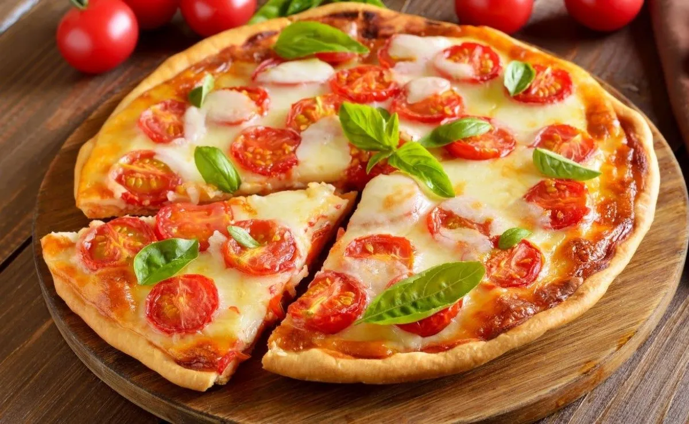
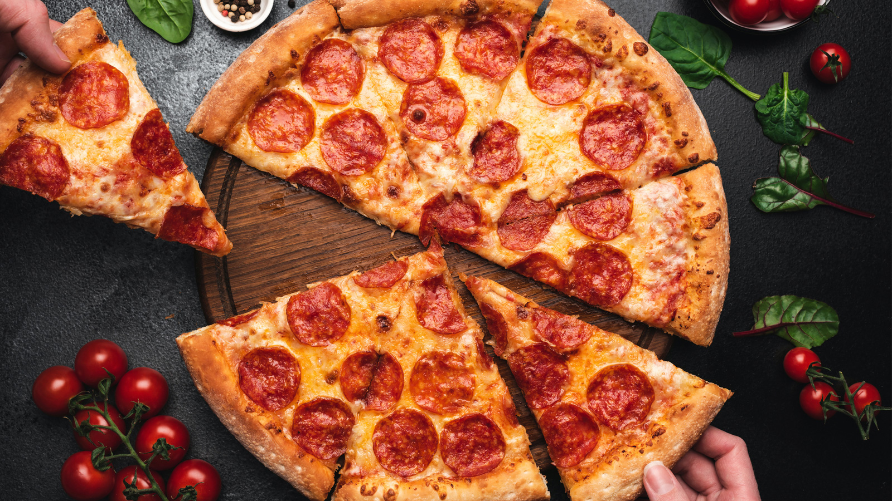

🍕Pizza Recipe🍕

Description
Making our own easy homemade pizza recipe is a much simpler process than we think, we just need to know the necessary pizza ingredients and the process to follow to integrate them. At Odin Recipes, we want you to learn easy recipes that allow you to prepare exquisite and unique dishes, like different varieties of homemade pizzas. That’s why we show you here how to make homemade pizza, are you going to miss it?
Dishes made in an artisanal way always constitute a higher quality and more economical meal, that’s why we encourage you to keep reading and discover the steps to make this homemade pizza in the oven with the pizza ingredients that you fancy. This way, you will always know what to add to a homemade pizza!
Ingredients

- 1 kilogram of strong flour (also known as 00 flour)
- 1 teaspoon of fine salt
- 2½ cups of warm water
- 2 tablespoons of olive oil
- 30 grams of fresh yeast
Utensils
- Wooden rolling pin
- Baking paper
- Bowl
Steps
Additional information:Before starting with the easy homemade pizza recipe, it is essential to make a small clarification about the flour. To make this type of dough, the most recommended flour is strong flour, since it contains a higher percentage of gluten the result will be a much fluffier homemade pizza dough. In Latin American countries, above all, this type of flour is known as 00 flour. Now, if you want to make gluten-free homemade pizza, check out this other recipe.
- The first thing we are going to do is mix the warm water with the fresh yeast in a container. To easily make a dough for homemade pizza you can use this type of yeast or make a pizza dough with dry yeast, both are valid. In the case that you prefer the dry one, you should mix it with the flour and if, on the contrary, you prefer the fresh one, it is essential to mix it with warm water. Fresh yeast is the one that is sold in blocks and must be kept in the refrigerator. (In general, about 30 grams of fresh yeast are equivalent to about 10 grams of dry yeast, keep this in mind if you want to use a different yeast than the one in this Italian pizza recipe.)
- Once you have mixed the yeast with the water, add the two tablespoons of oil. Mix well so that all the ingredients for the pizza are integrated.
- Before the preparation cools down, add the strong flour and salt in a large bowl, arrange them in the shape of a volcano. Pour the previous mixture into the center.
- Now is when you have to start kneading well until you notice that the homemade pizza dough stops sticking to your hands and you can handle it without problems.
- When you have the fluffy pizza dough ready, you should shape it into a long tube and cut it into 4 partitions. Then, make a ball with each partition and cover them with a clean, dry cloth. You should let them rest for 45 minutes. You will see that, little by little, they start to rise until they double their volume. Each ball of dough will serve you to make a normal homemade pizza.
- After the corresponding time, sprinkle a little flour on a table to prepare the homemade pizza, take one of the balls and place it on it. Now you should extend it with your hands stretching from the center to the sides, giving it a circular shape. If you have a rolling pin you can also use it to make the dough thinner. Once stretched, you can now add the homemade pizza sauce and the pizza ingredients you prefer. You can use this delicious homemade recipe for tomato and onion pizza sauce.